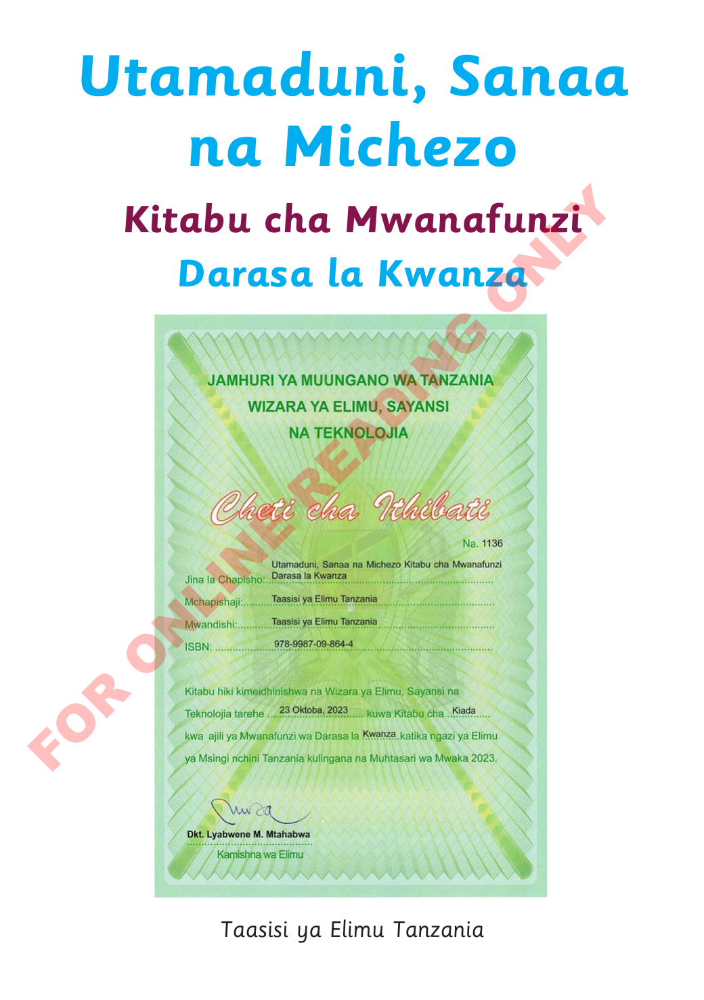

Ukurasa wa kichwa wa Utamaduni, Sanaa na Michezo, Kitabu cha Mwanafunzi, Darasa la Kwanza

Utamaduni, Sanaa na Michezo. Kitabu cha Mwanafunzi. Darasa la Kwanza. Taasisi ya Elimu Tanzania.Jina la kitabu linaonekana juu ya cheti cha ithibati chenye rangi ya kijani. Cheti namba 1136 kinaonyesha kuwa kitabu kimeidhinishwa na Wizara ya Elimu, Sayansi na Teknolojia tarehe 23 Oktoba 2023 kwa wanafunzi wa Darasa la Kwanza. Kina saini ya Dkt. Lyabwene M. Mtahabwa, Kamishna wa Elimu. Alama ya FOR ONLINE READING ONLY inapita juu ya cheti.